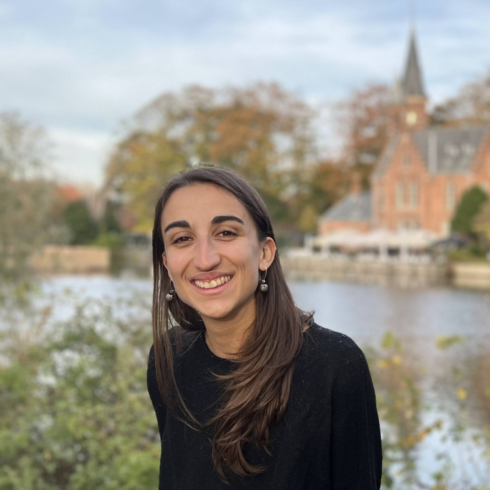
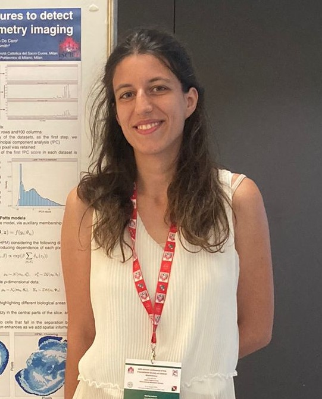
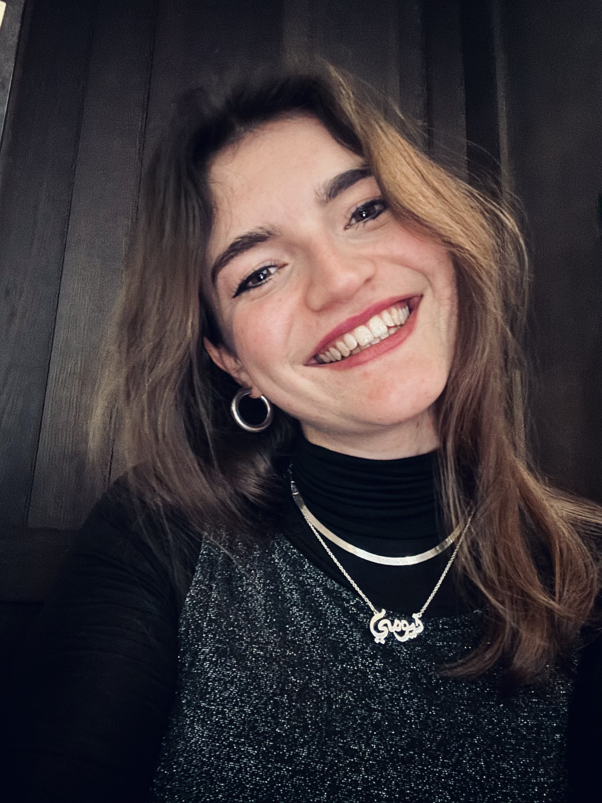
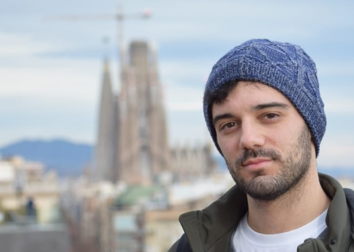

Elections y-SIS 2023 - Candidates
Martina Amongero
Martina Amongero obtained her Ph.D. in Pure and Applied Mathematics in 2024 at the Department of Mathematical Sciences, Politecnico di Torino, where she specialized in biostatistics with a scholarship sponsored by GSK Vaccines. She is currently a postdoctoral fellow at the Department of Economics, Social Studies, Applied Mathematics, and Statistics, Università di Torino. Her research focuses on Bayesian mixture models for community detection. Martina has a deep passion for statistics in all its facets, from theoretical modeling to computational techniques, with a particular emphasis on applications to real-world data. She is especially interested in data derived from epidemiological, biological, and medical contexts, aiming to bridge the gap between theoretical research and practical applications.
Over the past two years, I have participated in several y-SIS events, connecting with many young researchers and forming new collaborations and friendships. I appreciated the diverse range of topics, the welcoming atmosphere, the enthusiasm, and the unique academic journeys shared by those I met. These experiences have inspired me to take on a more active role within the y-SIS Society, as I believe it plays a crucial role in creating a supportive network for young statisticians, fostering both academic and personal development. Throughout my career, I had the privilege of working at the Department of Mathematical Sciences (Politecnico di Torino), where I completed my Ph.D., at the Department of Applied Mathematics, Computer Science, and Statistics (Universiteit Gent) as a visiting Ph.D. student, and currently at the Department of Economics, Social Studies, Applied Mathematics, and Statistics (Università di Torino), where I am a postdoctoral fellow. This background enables me to bring a fresh perspective and contribute meaningfully to the y-SIS community. I am excited to build on the efforts of past members and contribute to strengthening this fantastic network with the same enthusiasm that initially inspired me.
Giulia Capitoli
My name is Giulia Capitoli, and I am an Assistant Professor (RTD-A) in Medical Statistics at the Department of Medicine and Surgery at the University of Milano-Bicocca. I completed my Ph.D. in Biostatistics and Clinical Research in 2020, focusing on statistical methods for the identification of relevant biomarkers in thyroid cancer in mass spectrometry imaging analysis. My biostatistical background has given me the opportunity to work with international multidisciplinary teams as the leading statistician, focusing on research tackling paediatric leukaemia collaborate with several people of different backgrounds, understanding the importance of statistical methodology and its effective communication.
Attending SIS events in recent years allowed me to connect with young statisticians of different backgrounds, fostering collaborations among various Italian universities. Through these experiences, I have learned to appreciate the importance of creating research groups that unite diverse scientific fields, generating impactful advances in science that might extend beyond academia. Moreover, I understood that building networks among young researchers is essential for emerging talents, helping them understand the complexities of research and promoting a collaborative spirit across disciplines. I am particularly excited about the prospect of joining the y-SIS board. Working in multidisciplinary settings has shown me the value of connecting methodological research with real-world applications, and I am motivated to share this approach with young statisticians. I see Young SIS as an invaluable platform for open exchange, networking, and bridging the communication gaps across various scientific societies: from statistics to biometry, clinical science, and biology. With my cross-disciplinary research background and enthusiasm for fostering shared objectives, I am eager to provide my contribute to Young SIS.
Noemi Corsini
I am a Research Assistant at the Institute of Criminology at the University of Cambridge. In this new role, I will collaborate with Paolo Campana on the analysis and modelling of high-dimensional criminal network data, which I find to be both very stimulating and interesting. I did my Ph.D. in Methodological Statistics at the Department of Statistics at the University of Padova, under the supervision of Giovanna Menardi and Michael Fop. My research interests focus on extending density-based clustering methods for complex data, such as categorical and mixed data, as well as network data. Specifically, during my Ph.D., I worked on extending modal clustering—originally developed for continuous data—to the categorical and mixed data settings. Moreover, I further developed model-based clustering techniques for network data within a Bayesian framework to allow for overlapping clusters. I am enthusiastic about applying these techniques, along with many new ones, to diverse and challenging real-world datasets, aiming to make an impact, big or small, in the world.
Being a researcher abroad, while it represents a tremendous opportunity for me to broaden my horizons, somewhat distances me from the statistical research scene in Italy. For this reason, I am interested in joining the young SIS board to remain an active part of the Italian statistical community, to personally give my contribution to the system that made me grow so much and, why not, to connect it with the statistical scene abroad me being a member of other young societies of statisticians.
Matteo Gianella
I am a PhD candidate at the Department of Mathematics at Politecnico di Milano, under the supervision of Alessandra Guglielmi. My research focuses on the development of efficient and scalable algorithms for Bayesian nonparametrics models for the analysis of massive spatial and spatio-temporal data. During these years, I had the opportunity to collaborate with amazing people: together with Alessandra Guglielmi, my supervisor, I have collaborated, among others, with Raffaele Argiento from Università di Bergamo, Lucia Paci from Università Cattolica del Sacro Cuore and Fernando Quintana form Pontificia Universidad Católica de Chile, whom I had the pleasure to work with during my visiting period in Chile. If you are interested, you can find more info about me on my webpage!
I truly believe that networking is a key part of being a researcher. A mutual exchange of ideas is a fundamental for developing new ideas and sets the roots for new scientific collaborations. That is why I believe that the role of y-SIS is vital for this purpose, as it offers young statisticians opportunities for learning, create connections and sharing innovative ideas. I am convinced that the Italian community of young statisticians is full of well prepared people with great ideas and great potential. I am confident that my enthusiasm and dedication will allow me to be an effective and valuable member of the y-SIS board. I am looking forward to having the opportunity to contribute to the future of y-SIS and the amazing community it represents.
Roberto Rondinelli

Roberto Rondinelli obtained a Bachelor's degree in Statistics and a Master's degree in Statistics for Decision Making both at the University of Naples Federico II. He later became PhD in Quantitative Methods for Economic Policy, curriculum in Network Analysis and Online Data Mining for Economic Policy, at the University of Macerata. During his PhD years, he was a visiting student at Tilburg University (Tilburg, NL) and Brunel University (London, UK). Subsequently, he held two post-doc research grants at University of Naples Federico II. In the same institution, he is currently Junior Assistant Professor in Statistics (STAT-01/A) at the Department of Political Sciences. During the period after PhD, he co-founded ‘young-FStat’, the group of young statisticians at the University of Naples Federico II, and he participated in the organisation of several events, such as conferences and seminars. His main research topics are about statistical modeling, clustering, and Network Analysis, focusing on the descriptive, methodological, and algorithmic-computational domains.
The motivation for the candidature as a member of the y-SIS board lies in the desire to stimulate the circulation of statistical knowledge among young Italian statisticians (PhD students and young researchers), to encourage discussion and participation of bachelor and master's degree statistics students as well, and ultimately to foster collaboration with foreign students and researchers. This predisposition of the candidate also emerges from the co-founding of “young-FStat,” the group of young statisticians at the University of Naples Federico II.
Alfonso Russo

I am a Postdoctoral Research Fellow in Statistics at the Department of Economics and Finance, "Tor Vergata" University of Rome. In 2023, I earned my PhD in Economics and Finance from the same department, specializing in Statistics under the supervision of Prof. Alessio Farcomeni. My international experience includes an MSc in Economic Analysis from the University of Warwick and a PhD student visit at Université Paris-Dauphine, where I deepened my expertise in Bayesian methods with Prof. Christian Robert. My research focuses on Bayesian statistics, latent variable modeling, and clustering analysis, with particular emphasis on mixed-type longitudinal data and hidden Markov/semi-Markov models for mixed-frequency time series processes. Further details about my work can be found on my personal webpage.
I am passionate about the mission of y-SIS to connect young statisticians and spark discussions that reach across borders. I would love to help expand the impact of y-SIS within the Italian Statistical Society by creating more opportunities for young statisticians to connect, learn, and collaborate. I also enjoy the social side of y-SIS and would bring that energy to organizing workshops, seminars, and events that encourage open, engaging discussions. I believe it is essential to create spaces where we can not only explore scientific topics but also share our experiences, challenges, and future plans. Building this kind of community makes a real difference, and I would be excited to help make y-SIS a place for genuine connections and support. Joining the board would be a fantastic opportunity to contribute to something meaningful and meet others who share my enthusiasm for our field. I would be excited to work with a team of like-minded statisticians to drive initiatives that make a real impact, both professionally and socially, for young statisticians across Italy.